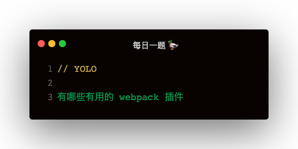

Loader
loader 的使用方式
如果不在 webpack.config.js 中配置 loader，那么怎么使用呢？
require('style-loader!css-loader!./index.css')
file-loader 处理文件
- 把原图片拷贝到 dist，文件名也会变
- 可以处理任意二进制数据
require('file-loader?outputPath=./images!./1.jepg')
{
test: /.png/,
use: {
loader: 'file-loader',
options: {
outputPath: '/images'
}
}
}
全局注入方案二：expose-loader
这样使用，需要手动 import jquery from 'jquery'；当 require 解析到这个 import 时，就会走 expose-loader
但是好处是：只会在一个文件中打包
{
test: require.resolve('jquery'),
use: {
loader: 'expose-loader',
options: {
exposes: {
globalName: '$',
override: true
}
}
}
}
babel-loader
babel非常慢，优化主要通过以下两点：
- exclude 或者 include 精确解析
- cacheDirectory: true 开启缓存
{
test: /.js$/,
use: {
loader: 'babel-loader',
options: {
presets: ['@babel/preset-env']
}
}
}
cache-loader
{
test: /\.js$/,
use: [
'cache-loader',
'babel-loader'
],
include: path.resolve('src')
}
css-loader
css-loader 解释 @import 和 url()
Plugins
CleanWebpackPlugin
开发时 dist 目录不断产出，文件很多很乱
const CleanWebpackPlugin = require('clean-webpack-plugin')
new CleanWebpackPlugin(['dist'])
不带参数的话，会把 output path 作为目标目录
全局注入方案一：ProvidePlugin
缺点：比如 $: jquery，使用到 $ 的模块都会打包jquery，造成重复打包
配置 noParse 也没用
const webpack = require('webpack')
new webpack.ProvidePlugin({
$: 'jquery'
})
extract-text-webpack-plugin
const ExtractTextWebpackPlugin = require('extract-text-webpack-plugin')
{
test: /\.css$/,
use: ExtractTextWebpackPlugin.extract({
fallback: 'style-loader',
use: 'css-loader'
})
}
plugins: [
new ExtractTextPlugin('style.css'),
]
多个 css 模块 如何处理？
const lessExtractPlugin = new ExtractTextWebpackPlugin('css/less.css')
const cssExtractPlugin = new ExtractTextWebpackPlugin('css/css.css')
const sassExtractPlugin = new ExtractTextWebpackPlugin('css/sass.css')
// 加载器以此类推
{
test: /\.css$/,
use: cssExtractPlugin.extract({
fallback: 'style-loader',
use: 'css-loader'
})
}
plugins: [
lessExtractPlugin,
cssExtractPlugin,
sassExtractPlugin,
]
CopyWebpackPlugin
const CopyWebpackPlugin = require('copy-webpack-plugin')
new CopyWebpackPlugin({
from: path.join(__dirname, 'public'),
to: path.join(__dirname, 'dist')
})
AggressiveSplittingPlugin
new webpack.optimize.AggressiveSplittingPlugin({
minSize: 30000,
maxSize: 50000,
chunkOverhead: 0,
})